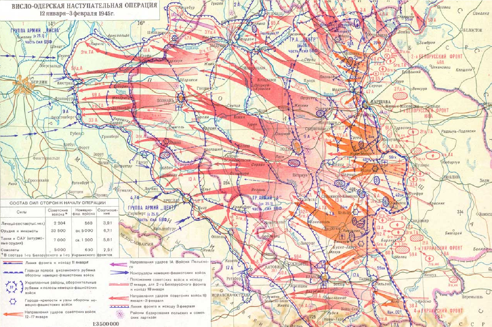
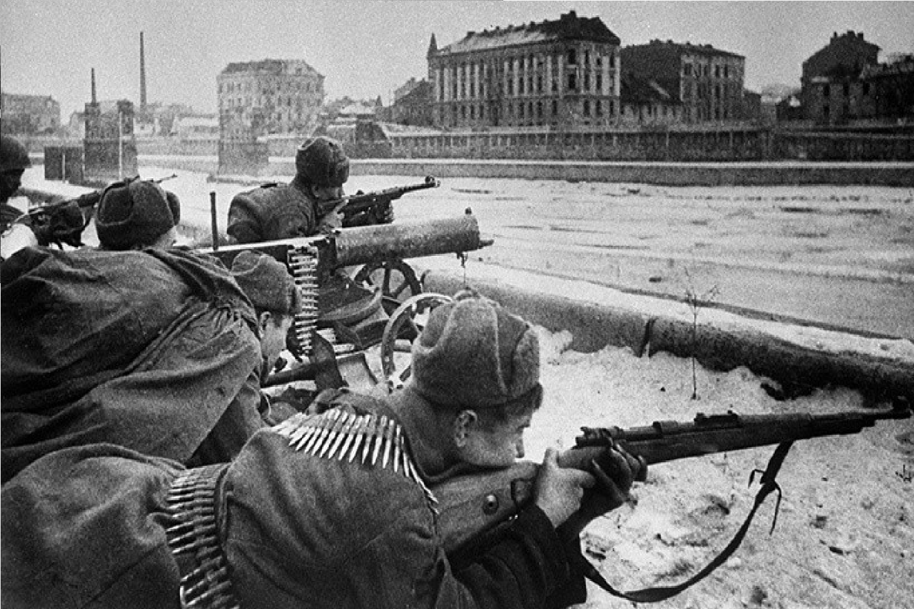
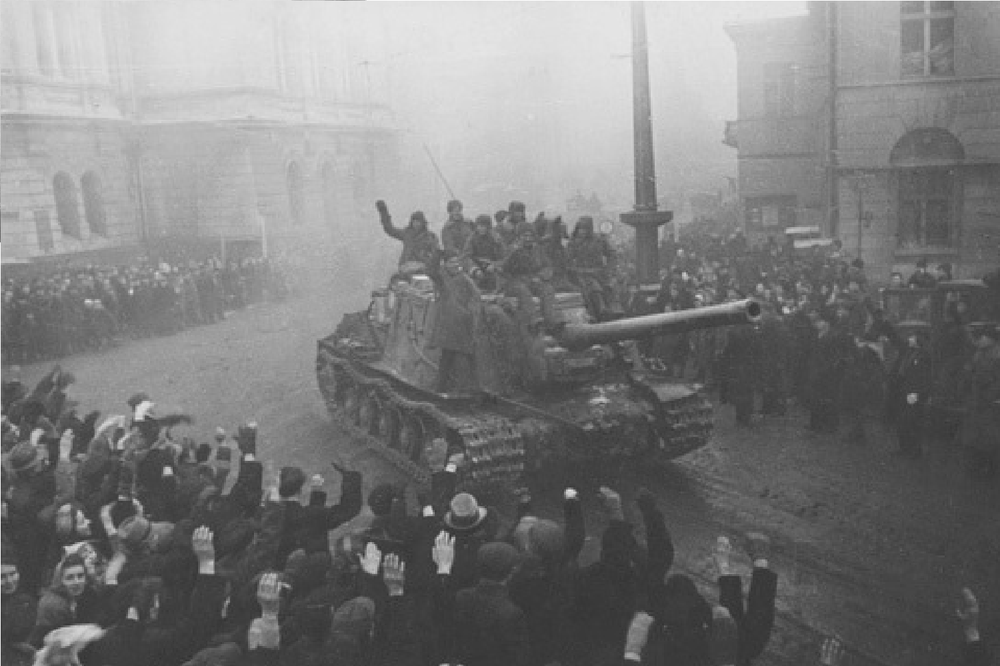

1945
|  |
ПодробннеОперация началась 12 января 1945 года. Красная армия сосредоточила значительные силы и средства для наступления. Ударная группировка, состоящая из войск 1-го Белорусского фронта под командованием маршала Георгия Жукова и 1-го Украинского фронта под командованием маршала Ивана Кирилловича Конева, была готова к прорыву. |
|
Основная часть операции началась 12 января с мощного артиллерийского обстрела позиций противника. Напряженные бои развернулись на различных участках фронта. Советские войска быстро преодолели реку Вислу и начали наступление на запад.К 27 января удалось успешно прорвать оборону немцев и захватить ключевые города, такие как Варшава и Краков. Силы Красной армии продвигались быстро, нанося значительные потери противнику.К февралю 1945 года войска Красной армии достигли района Одерa и закрепились на его западном берегу. Операция закончилась успешным выполнением поставленных целей, что открыло дорогу к Берлину и предопределило дальнейшие события войны в Европе. |
 |
|  | Висло-Одерская операция стала одной из самых масштабных и успешных наступательных операций советских войск на Восточном фронте. Она продемонстрировала высокую эффективность стратегии и тактики Красной армии, а также большую подготовленность и решимость советского командования. Успех операции способствовал окончанию войны в Европе и освобождению стран Центральной и Восточной Европы от нацистского режима. |